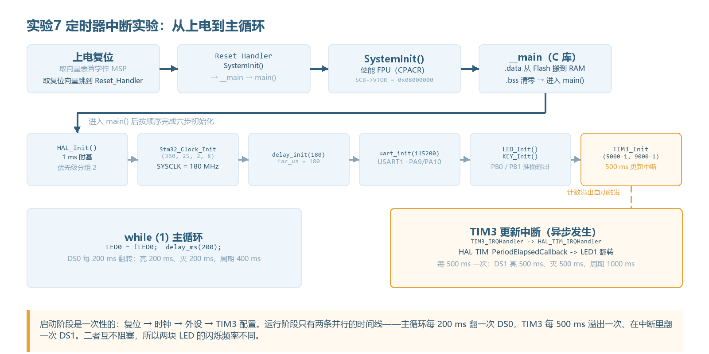
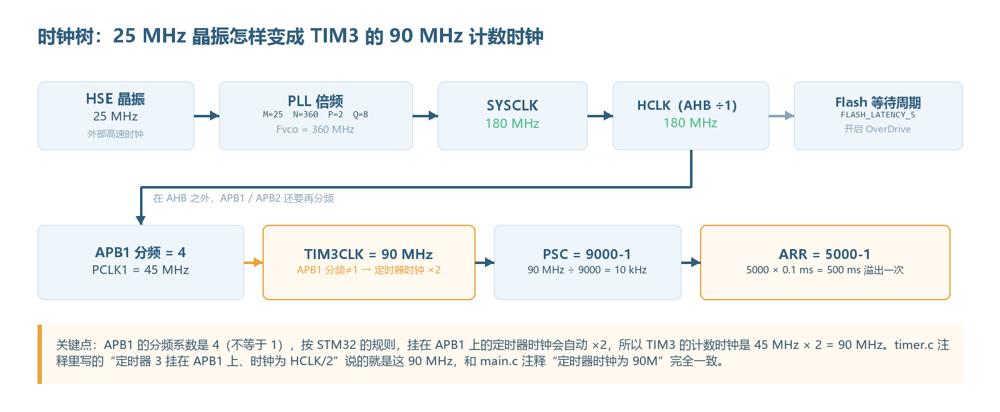
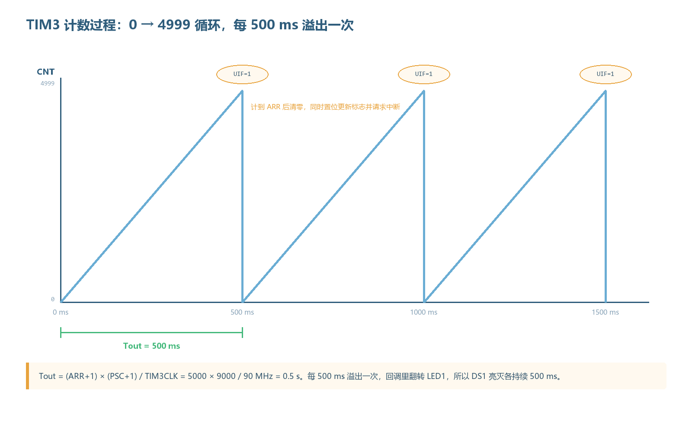
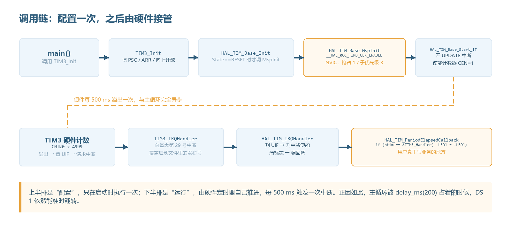
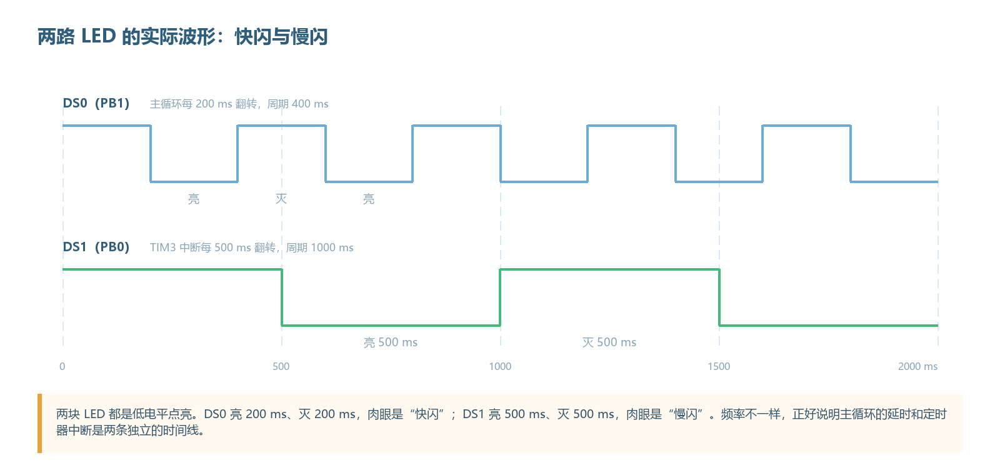

01 实验概述与硬件资源
实验6 用窗口看门狗保证程序不跑飞，实验7 换一个方向：用硬件定时器产生严格等间隔的事件。同样是“隔一段时间翻转一次 LED”，主循环里的 delay_ms 靠 CPU 空转计时，而定时器靠硬件计数，CPU 完全不用等。
| 资源 | 引脚 / 外设 | 在本实验中的作用 |
|---|---|---|
| DS0 | PB1（LED0） | 主循环每 200 ms 翻转，周期 400 ms |
| DS1 | PB0（LED1） | TIM3 中断每 500 ms 翻转，周期 1000 ms |
| TIM3 | APB1 上的通用定时器 | 溢出周期 500 ms，产生更新中断 |
| USART1 | PA9 / PA10 | 115200 波特率，串口打印调试信息 |
02 工程目录与文件分工
| 目录 / 文件 | 归属 | 关键内容 |
|---|---|---|
USER/main.c | 用户 | main 函数：六步初始化 + while(1) |
USER/stm32f4xx_it.c | 用户 | 中断入口，本工程只实现了 SysTick_Handler |
USER/TIMER.uvprojx | 工程 | 器件 STM32F429IGTx，宏 USE_HAL_DRIVER, STM32F429xx |
HARDWARE/TIMER/timer.c | 用户 | TIM3 初始化、MSP、中断入口、更新回调 |
HARDWARE/LED/led.c | 用户 | PB0 / PB1 推挽输出，初始置高（熄灭） |
SYSTEM/sys/sys.c | 用户 | Stm32_Clock_Init：HSE → PLL → 180 MHz |
SYSTEM/usart/usart.c | 用户 | USART1 初始化，PA9 / PA10 复用 |
CORE/startup_stm32f429xx.s | 启动 | 向量表、Reset_Handler、各中断的弱定义 |
HALLIB/ | ST 官方 | HAL 库 V1.3.2，只读不改 |
stm32f4xx_hal_ 前缀的，都属于 ST 的库；带 MspInit 后缀的，是本工程自己写的底层初始化（时钟、GPIO、NVIC），由库在初始化流程里回调。03 启动流程总览

main 函数全文
int main(void)
{
HAL_Init(); // 初始化HAL库
Stm32_Clock_Init(360,25,2,8); // 设置时钟,180Mhz
delay_init(180); // 初始化延时函数
uart_init(115200); // 初始化USART
LED_Init(); // 初始化LED
KEY_Init(); // 初始化按键
TIM3_Init(5000-1,9000-1); // 定时器时钟为90M，分频 9000 → 10K，重装 5000-1 → 500ms
while(1)
{
LED0=!LED0; // LED0翻转
delay_ms(200); // 延时200ms
}
}
这七行代码的顺序不能随便换，原因都在“依赖”二字：
HAL_Init必须最先，它建立 1 ms 时基，后面的delay_ms才有依据；Stm32_Clock_Init必须早于所有外设初始化，因为外设的时钟都来自它；TIM3_Init放在最后，是因为它依赖已经配好的 APB1 时钟和已使能的 GPIO。
TIM3_Init(5000-1, 9000-1) 的实参顺序是“先 ARR、后 PSC”，和很多人凭直觉写的顺序正好相反。参数传反了，500 ms 会变成完全不同的时间。04 启动文件与向量表
STM32F429 复位时把 Flash 起始地址 0x08000000 映射到地址 0，所以向量表第一项（栈顶）和第二项（复位入口）就位于 Flash 最前面：
| 表项序号 | 地址 | 内容 |
|---|---|---|
| 0 | 0x08000000 | __initial_sp（栈顶，供 MSP 装载） |
| 1 | 0x08000004 | Reset_Handler |
| 16 + 29 | 0x080000B4 | TIM3_IRQHandler（TIM3_IRQn = 29） |
| 16 + 37 | 0x080000D4 | USART1_IRQHandler（USART1_IRQn = 37） |
地址算法只有一条：0x08000000 + 4 × (16 + IRQn)。16 是内核异常占掉的表项，IRQn 是芯片手册里给的中断号。
; CORE/startup_stm32f429xx.s 片段 DCD TIM3_IRQHandler ; TIM3，第 29 号外部中断，地址 0x080000B4 DCD TIM4_IRQHandler ; TIM4
弱符号：为什么 timer.c 里能“重复定义”中断函数
启动文件里每个中断入口都写成 EXPORT ... [WEAK]，意思是“如果别处有同名强符号，就用别处的”。timer.c 里的 TIM3_IRQHandler 是强符号，链接时自动覆盖启动文件里的空壳。这就是为什么在 stm32f4xx_it.c 里找不到 TIM3 的中断函数，程序却仍能进中断。
05 SystemInit 与 __main
Reset_Handler PROC
EXPORT Reset_Handler [WEAK]
IMPORT SystemInit
IMPORT __main
LDR R0, =SystemInit
BLX R0 ; 1. 内核与外设的基础环境
LDR R0, =__main
BX R0 ; 2. C 库的初始化入口
ENDP
SystemInit 做了什么
- 使能 FPU：写
CPACR的 CP10 / CP11 位，否则浮点指令会触发硬件异常； - 设置向量表偏移：
SCB->VTOR = FLASH_BASE | VECT_TAB_OFFSET，本工程偏移为 0，即向量表仍在0x08000000。
注意它不改系统时钟。此时芯片还跑在内部 HSI 16 MHz 上，真正升到 180 MHz 是后面 Stm32_Clock_Init 的事。
__main 做了什么
- 把已初始化的全局变量从 Flash 里的初值副本搬到 RAM 的
.data段； - 把
.bss段（未初始化或初值为 0 的全局变量）整体清零； - 配置堆栈，最后才调用用户的
main()。
__main 直接跳 main，全局变量会是随机值——TIM3_Handler 这种全局句柄里的 State 字段就会是垃圾，HAL_TIM_Base_Init 的行为随之不可预测。06 HAL_Init：时基与优先级分组
HAL_StatusTypeDef HAL_Init(void)
{
HAL_NVIC_SetPriorityGrouping(NVIC_PRIORITYGROUP_2);
HAL_InitTick(TICK_INT_PRIORITY); // TICK_INT_PRIORITY = 0x0F
HAL_MspInit();
return HAL_OK;
}
| 动作 | 取值 | 含义 |
|---|---|---|
| 优先级分组 | NVIC_PRIORITYGROUP_2 | 4 位优先级里高 2 位作抢占、低 2 位作子优先级，两者取值都是 0~3 |
| SysTick 优先级 | 0x0F | 抢占 3、子 3，是最低等级 |
| TIM3 优先级 | HAL_NVIC_SetPriority(TIM3_IRQn,1,3) | 抢占 1 > 3，因此 TIM3 可以打断 SysTick |
这个分组结果是后面所有 SetPriority 调用合法性的前提。分组 2 下抢占值只能填 0~3，填 4 就会被截断，实际生效的值和你写的不是一回事。
delay_us 是在主循环里忙等的；如果定时器中断优先级比 SysTick 还低，理论上也不会出问题，但把定时器放高一级能保证 500 ms 的节拍不被 SysTick 的时基更新推迟。07 系统时钟与 SysTick 延时

void Stm32_Clock_Init(u32 plln,u32 pllm,u32 pllp,u32 pllq)
{
__HAL_RCC_PWR_CLK_ENABLE();
__HAL_PWR_VOLTAGESCALING_CONFIG(PWR_REGULATOR_VOLTAGE_SCALE1);
RCC_OscInitStructure.OscillatorType = RCC_OSCILLATORTYPE_HSE;
RCC_OscInitStructure.HSEState = RCC_HSE_ON;
RCC_OscInitStructure.PLL.PLLM = pllm; // 25
RCC_OscInitStructure.PLL.PLLN = plln; // 360
RCC_OscInitStructure.PLL.PLLP = pllp; // 2
RCC_OscInitStructure.PLL.PLLQ = pllq; // 8
HAL_RCC_OscConfig(&RCC_OscInitStructure);
HAL_PWREx_EnableOverDrive(); // 180 MHz 必须开过驱动
RCC_ClkInitStructure.AHBCLKDivider = RCC_SYSCLK_DIV1;
RCC_ClkInitStructure.APB1CLKDivider = RCC_HCLK_DIV4;
RCC_ClkInitStructure.APB2CLKDivider = RCC_HCLK_DIV2;
HAL_RCC_ClockConfig(&RCC_ClkInitStructure, FLASH_LATENCY_5);
}
| 节点 | 计算 | 结果 |
|---|---|---|
| PLL 输入 | HSE 25 MHz ÷ PLLM | 1 MHz |
| VCO | 1 MHz × PLLN | 360 MHz |
| SYSCLK | 360 MHz ÷ PLLP | 180 MHz |
| HCLK | SYSCLK ÷ 1 | 180 MHz |
| PCLK1 | HCLK ÷ 4 | 45 MHz |
| PCLK2 | HCLK ÷ 2 | 90 MHz |
| TIM3CLK | PCLK1 × 2（分频系数≠1） | 90 MHz |
delay_init 与 SysTick 的关系
HAL_Init 里已经把 SysTick 配成 1 ms 一次（重装值 180000），HAL_RCC_ClockConfig 之后 HAL 又会按新频率重新调用一次 HAL_InitTick。而 delay_init(180) 并不重配 SysTick，只是记下“1 微秒对应 180 个 HCLK 周期”，供 delay_us 读 SysTick->VAL 做忙等计时。
delay_init 的参数写成 168 或 72，延时就会整体偏长或偏短，但定时器中断周期完全不受影响——这两套计时机制互相独立，正好可以拿来互相验证。08 串口与 printf 重定向
uart_init(115200); // main.c 中调用，波特率 115200
| 项目 | 配置 | 说明 |
|---|---|---|
| 外设 | USART1 | 挂在 APB2 上，时钟 90 MHz |
| 引脚 | PA9（TX）/ PA10（RX） | GPIO_AF7_USART1 复用 |
| GPIO 时钟 | __HAL_RCC_GPIOA_CLK_ENABLE() | 在 HAL_UART_MspInit 中使能 |
| 中断优先级 | HAL_NVIC_SetPriority(USART1_IRQn,3,3) | 低于 TIM3（1,3），不会抢定时器的节拍 |
重定向的常规做法是重写 fputc，把字符逐个写进 USART1->DR，并等待 USART1->SR 的 TXE 标志。这样 printf 才能从串口输出。
printf 可能阻塞几百微秒到几毫秒。所以判断“定时器有没有准时”，不能用打印的时间戳，要看 LED 或示波器。09 LED 与按键初始化
void LED_Init(void)
{
GPIO_InitTypeDef GPIO_Initure;
__HAL_RCC_GPIOB_CLK_ENABLE(); // 使能GPIOB时钟
GPIO_Initure.Pin = GPIO_PIN_0 | GPIO_PIN_1; // PB0 / PB1
GPIO_Initure.Mode = GPIO_MODE_OUTPUT_PP; // 推挽输出
GPIO_Initure.Pull = GPIO_PULLUP; // 上拉
GPIO_Initure.Speed = GPIO_SPEED_HIGH; // 高速
HAL_GPIO_Init(GPIOB, &GPIO_Initure);
HAL_GPIO_WritePin(GPIOB, GPIO_PIN_0 | GPIO_PIN_1, GPIO_PIN_SET); // 都置高，默认熄灭
}
| 宏 | 展开 | 物理引脚 |
|---|---|---|
LED0 | PBout(1) | PB1 → DS0 |
LED1 | PBout(0) | PB0 → DS1 |
所以 LED1 = !LED1 实际上就是“翻转 PB0 的输出电平”。PBout 是位带操作的宏，最终落到 GPIOB->ODR 的某一位，一条指令就能完成，非常适合放在中断里。
10 TIM3 初始化拆解
TIM_HandleTypeDef TIM3_Handler;
void TIM3_Init(u16 arr,u16 psc)
{
TIM3_Handler.Instance = TIM3;
TIM3_Handler.Init.Prescaler = psc; // 9000-1
TIM3_Handler.Init.CounterMode = TIM_COUNTERMODE_UP;
TIM3_Handler.Init.Period = arr; // 5000-1
TIM3_Handler.Init.ClockDivision = TIM_CLOCKDIVISION_DIV1;
HAL_TIM_Base_Init(&TIM3_Handler);
HAL_TIM_Base_Start_IT(&TIM3_Handler); // 使能定时器3和更新中断
}
三层各自的职责
| 层 | 做什么 | 容易被忽略的点 |
|---|---|---|
| 句柄赋值 | 把 Instance、PSC、ARR、计数方向填进 TIM3_Handler | 句柄是全局变量，生命周期与程序相同 |
HAL_TIM_Base_Init | 写 PSC / ARR / CR1，并在 State == HAL_TIM_STATE_RESET 时回调 HAL_TIM_Base_MspInit | 已经初始化过就不会再调 MspInit |
HAL_TIM_Base_Start_IT | 先 __HAL_TIM_ENABLE_IT(htim, TIM_IT_UPDATE)，再置 CEN 启动计数 | 顺序很关键：先开中断源，再启动计数 |
MspInit 里配的时基“地基”
void HAL_TIM_Base_MspInit(TIM_HandleTypeDef *htim)
{
if(htim->Instance == TIM3)
{
__HAL_RCC_TIM3_CLK_ENABLE(); // 开TIM3时钟，否则寄存器写了也不生效
HAL_NVIC_SetPriority(TIM3_IRQn,1,3); // 抢占1，子优先级3
HAL_NVIC_EnableIRQ(TIM3_IRQn); // 允许NVIC把这个中断送给CPU
}
}
11 定时器时钟与计数原理

| 环节 | 公式 | 数值 |
|---|---|---|
| 定时器时钟 | PCLK1 × 2（APB1 分频 = 4 ≠ 1） | 90 MHz |
| 计数频率 | TIM3CLK ÷ (PSC + 1) = 90 MHz ÷ 9000 | 10 kHz（0.1 ms 一次） |
| 溢出周期 | (ARR + 1) × (PSC + 1) ÷ TIM3CLK = 5000 × 9000 ÷ 90 MHz | 0.5 s |
| LED 闪烁周期 | 每溢出一次翻转一次 → 亮 500 ms + 灭 500 ms | 1 s |
// timer.c 头部注释给出的通式
Tout = ((arr+1)*(psc+1))/Ft us
注释里的“HCLK/2”和“90M”矛盾吗
不矛盾。timer.c 写的是“定时器 3 挂在 APB1 上，时钟为 HCLK/2”，指的是定时器专用时钟（180 ÷ 2 = 90 MHz）；main.c 写的是“定时器时钟为 90M”，是同一个东西的另一种说法。真正要记住的是那条规则：APB1 分频系数不等于 1 时，定时器时钟自动 ×2。
12 中断服务与回调

// 1. 中断入口：覆盖启动文件里的弱符号 void TIM3_IRQHandler(void) { HAL_TIM_IRQHandler(&TIM3_Handler); } // 2. 用户回调：真正写业务的地方 void HAL_TIM_PeriodElapsedCallback(TIM_HandleTypeDef *htim) { if(htim == (&TIM3_Handler)) { LED1 = !LED1; } }
中间那一级 HAL_TIM_IRQHandler 的判断顺序值得记住：
- 先查
TIM_FLAG_UPDATE（UIF）是否置位——确认真的是更新事件； - 再查
TIM_IT_UPDATE使能位——确认这个事件是被允许产生中断的； - 清 UIF 标志，然后调用
HAL_TIM_PeriodElapsedCallback。
回调里为什么要写 if(htim == (&TIM3_Handler))？因为这个回调是所有定时器共用的。本工程只用了 TIM3，判断可以省，但一旦以后加了 TIM4、TIM5，没有这句判断就会一起翻转。
delay_ms、printf 这类会阻塞或依赖中断的代码。中断里忙等会拖住整个系统，甚至让 SysTick 时基失真。13 主循环与实验现象

| LED | 驱动方式 | 翻转间隔 | 周期 | 肉眼观感 |
|---|---|---|---|---|
| DS0（PB1） | while(1) 里的 delay_ms(200) | 200 ms | 400 ms | 快闪 |
| DS1（PB0） | TIM3 更新中断回调 | 500 ms | 1000 ms | 慢闪 |
实际运行时，两者是同时进行的：主循环翻完 DS0 就进 delay_ms(200) 空转，此时 TIM3 仍在自己计数；一旦计满 5000 个数，硬件发出中断，CPU 暂停主循环、进回调翻 DS1，然后返回继续空转。所以 DS0 的 200 ms 和 DS1 的 500 ms 谁也不会等谁。
__HAL_RCC_TIM3_CLK_ENABLE() 有没有调用、HAL_NVIC_EnableIRQ(TIM3_IRQn) 有没有调用、TIM3_IRQHandler 的拼写是否与启动文件一致。14 总结与常见问题
启动过程一句话版
上电 → 读向量表拿栈顶和 Reset_Handler → SystemInit 开 FPU、设 VTOR → __main 搬 .data、清 .bss → main 里依次 HAL_Init、Stm32_Clock_Init、delay_init、uart_init、LED_Init、KEY_Init、TIM3_Init → 进 while(1)，此后主循环与定时器中断并行运行。
| 现象 | 可能原因 | 排查方法 |
|---|---|---|
| DS1 完全不闪 | 外设时钟未开、NVIC 未使能、中断函数名拼错 | 查 MspInit 三件事是否齐全；在 TIM3_IRQHandler 里打断点 |
| DS1 闪得太快或太慢 | 把 90 MHz 当成 45 MHz 计算，或 ARR / PSC 传反 | 回到 Tout = (ARR+1)(PSC+1)/TIM3CLK 重算 |
| 两块 LED 一起闪、频率相同 | 回调里漏了 if(htim == &TIM3_Handler)，或 LED0 / LED1 宏写反 | 对照 led.h 的宏定义：LED0 = PB1、LED1 = PB0 |
| 程序一进中断就卡死 | 中断里放了 delay_ms 或 printf | 回调只保留电平翻转，把耗时操作搬到主循环 |
| 延时整体偏长 / 偏短 | delay_init 的参数与实际 HCLK 不一致 | 确认 delay_init(180) 与 SYSCLK 180 MHz 对应 |